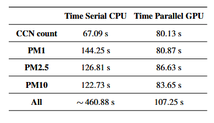

Suurteholaskenta · Tieteellinen laskenta
Projektissa tutkittiin, kuinka GPU-laskentaa voidaan hyödyntää suurten ilmastomalliaineistojen jälkikäsittelyn nopeuttamiseen. Työssä korvattiin laskennallisesti raskaita CPU-operaatioita CUDA-yhteensopivilla GPU-laskennoilla hyödyntäen CuPy-kirjastoa. Toteutus kehitettiin ja testattiin CSC:n Mahti- supertietokoneella käyttäen todellista ilmastomallidataa.
| Projekti | Tieteellisen laskennan projektityö |
| Yliopisto | Itä-Suomen yliopisto |
| Ajankohta | 2026 |
| Ohjelmointikieli | Python |
| GPU-teknologia | CUDA / CuPy |
| Suoritusympäristö | CSC Mahti -supertietokone |
| Sovelluskohde | Ilmastomallin jälkikäsittely |
| Kokonaisnopeutus | Noin 4,3-kertainen |

Ilmastomallien simuloinnit tuottavat erittäin suuria moniulotteisia aineistoja, joiden jälkikäsittely voi sisältää suuren määrän toistuvia numeerisia operaatioita. Perinteisesti yhdellä CPU:lla suoritettuna nämä laskennat voivat muodostua koko analyysiprosessin pullonkaulaksi.
Projektin tavoitteena oli hyödyntää GPU-rinnakkaislaskentaa ilmastodatan numeerisen jälkikäsittelyn nopeuttamiseksi säilyttäen tulosten oikeellisuus. Työssä tutkittiin erityisesti CUDA-pohjaisen rinnakkaislaskennan ja CuPy-kirjaston soveltuvuutta useiden ilmakehän suureiden laskentaan.
GPU-rinnakkaistettu toteutus lyhensi koko jälkikäsittelyprosessin suoritusajan noin 460,88 sekunnista 107,25 sekuntiin. Tämä vastaa noin 4,3-kertaista kokonaisnopeutusta sarjalliseen CPU-toteutukseen verrattuna.

Suurin suorituskykyhyöty saavutettiin hiukkaspitoisuuksien laskennassa. PM1-, PM2.5- ja PM10-laskennat nopeutuivat selvästi, koska niissä voitiin hyödyntää tehokkaasti GPU:n suurta määrää rinnakkaisia laskentaytimiä.
Kaikki laskentavaiheet eivät kuitenkaan hyötyneet rinnakkaistamisesta samalla tavalla. CCN-laskennan suoritusaika kasvoi noin 67,09 sekunnista 80,13 sekuntiin. Tämä osoittaa, että GPU-laskenta ei automaattisesti nopeuta kaikkia algoritmeja. Pienemmissä tai vähemmän rinnakkaistuvissa laskennoissa datansiirto, muistinhallinta ja GPU-käynnistysten yleiskustannus voivat olla suurempia kuin saavutettu laskentahyöty.
Tulokset osoittivat, että GPU-laskenta soveltui erityisen hyvin suuriin taulukkomuotoisiin laskentoihin, joissa samat operaatiot suoritettiin rinnakkain suurelle määrälle ilmakehän hilapisteitä, korkeustasoja ja aika-askeleita.
Kokonaisprosessin kannalta GPU-toteutus oli selvästi nopeampi, vaikka yksittäinen CCN-laskenta ei hyötynyt rinnakkaistamisesta. Tämä korostaa suorituskykymittausten merkitystä: rinnakkaistamisen hyöty tulee arvioida koko työnkulun eikä vain yksittäisen laskentaytimen perusteella.
Projekti tarjosi käytännön kokemusta tieteellisen Python-koodin siirtämisestä CPU-laskennasta GPU-ympäristöön. Työssä korostuivat laskennan rinnakkaistettavuuden arviointi, GPU-muistin hallinta, datansiirtojen minimointi ja eri toteutusten suorituskyvyn mittaaminen.
Tulokset osoittivat myös, että tehokas GPU-ratkaisu vaatii muutakin kuin NumPy-operaatioiden suoran korvaamisen CuPy- operaatioilla. Koko laskentaputken rakenne, käsiteltävien aineistojen koko ja CPU:n sekä GPU:n väliset siirrot vaikuttavat merkittävästi saavutettavaan nopeutukseen.
Jatkossa suorituskykyä voitaisiin parantaa vähentämällä CPU:n ja GPU:n välisiä datansiirtoja, säilyttämällä välituloksia pidempään GPU-muistissa sekä käsittelemällä useampia laskentavaiheita yhtenä kokonaisuutena.
Toteutusta voitaisiin lisäksi laajentaa usean GPU:n laskentaan, hajautettuun käsittelyyn sekä entistä suurempiin ilmastomalliaineistoihin. Erityisesti CCN-laskennan rakennetta voitaisiin analysoida tarkemmin sen selvittämiseksi, voidaanko algoritmia muuttaa GPU:lle paremmin soveltuvaksi.